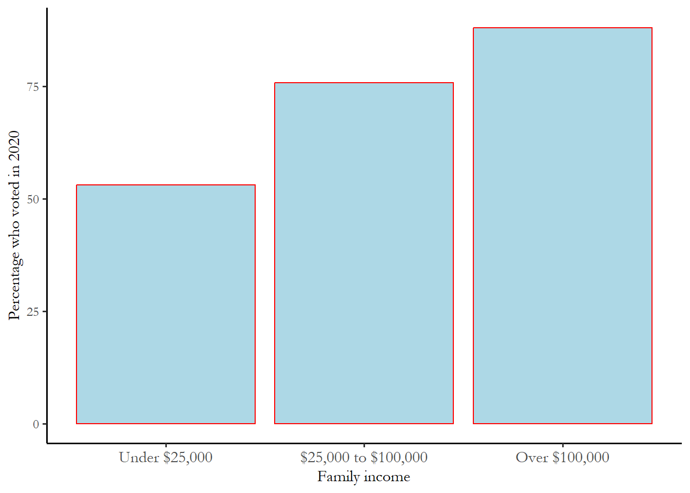

7 Statistical models with many predictors
This chapter introduces the statistical model that is most commonly used in the social sciences and the building block for more complex models that have emerged to confront specific research challenges.
The simple linear model with more than one predictor is known as the multivariate model or multivariate regression. Social scientists use this approach to study behavior, evaluate public policy, or forecast events. It is also the foundation for more complex modeling used in fields ranging from public health to environmental sciences. We are mainly interested in the multivariate model since it offers a flexible way to simultaneously evaluate the effects of many predictors in one set of statistical tests. We can isolate the effect of one factor in a model by “controlling” for a variety of other factors.
7.1 What is controlled comparison?
Recall the distinction between experimental research and observational research introduced early in the course. Experimental research in social science shows up in both work on public policy (program clients are randomly assigned to control or intervention) and surveys or lab experiments (subjects are exposed to different information or situations or frames, referred to as an experimental manipulation). For research in this course, we rely on an observational approach, using a random sample of potential US voters. The challenge with observational research is that we might be interested in comparing members of two groups – maybe older and younger voters, but we can’t isolate the effect of age alone. People who are older are likely to have more health problems, reside in a rural area, to attend church and have a lower than average level of education. To isolate the effect of age or any \(X\) we care about we must “control” for other differences between groups.
We know that the basic assumption of the simple linear model is that the primary predictor we are interested in (\(X\)) has a link to the behavior or attitude we are investigating (\(Y\)). Controlled comparison simply involves considering a third variable, \(Z\), that is related to both \(X\) and \(Y\). \(Z\) is associated with \(X\). \(Z\) is associated with \(Y\). The question we are interested in: Does the link between \(X\) and \(Y\) hold if you test the relationship between \(X\) and \(Y\) at varying levels of \(Z\)?
We need to understand what the effect of \(X\) is on \(Y\) as we control for \(Z\). We can even broaden our investigation to include multiple control variables, not just a single \(Z\). This is the logic of controlled comparison – evaluate the link between \(X\) and \(Y\) for varying levels of \(Z\). For instance, if we were interested in how income (\(X\)) influenced turnout (\(Y\)), we might want to control for education (\(Z\)). We know education is linked to turnout and to income, so our understanding of the link between income and turnout might be distorted by education.
Consider what might happen is you test the link between \(X\) and \(Y\) for varying levels of \(Z\).
You could see no change from your original investigation – \(X\) affects \(Y\) when you look at the relationship with \(X\) for the entire sample and \(X\) matters in the same way when you look at the link for subsets of the sample at various levels of \(Z\). This is labeled an additive effect.
But you might discover a link between \(X\) and \(Y\) that disappears when you test the link at various levels of \(Z\). In that case, when a result that we found to be important shrinks to zero when we control for \(Z\). the original result is labeled as spurious.
Or it could be the case that you find no link between \(X\) and \(Y\) but the link emerges as important or significant when you conduct a controlled comparison. This would be an example of confounding – you were misled, thinking there was no link between \(X\) and Y, but discovered the link when you introduced controls.
A final case could be when find that the link \(X\) and \(Y\) is actually different across the levels of \(Z\) – positive in some subsets of the sample and negative in others. This is known as an interactive effect.
In earlier chapters, we described three ways that we could use tables and figures to show the link between two variables: cross-tabs, bar charts, and line charts. We can use the same strategies to implement a controlled comparison, using the examples to reinforce the difference between additive, spurious and confounding effects.
7.1.1 Red state, Blue state: cross tabulation with a control variable
Observers of American politics claim that the South is politically distinctive (100 % “Red State”). We associate Red states with what? Republican voting, support for the military, guns, Christian values, maybe even NASCAR and country music. We associate Blue states with Democratic voting, urban living, Volvos, latte and book clubs. While the stereotypes are fun, are Red states really that different? The 2004 election should be very good test of this question – George Bush – from Texas – was running for re-election against John Kerry, a northerner, a liberal, and career politician and diplomat. Kerry was portrayed as elitist, affected and out-of-touch. So what happened to Kerry in the South? Was the proportion of the electorate supporting Bush in 2004 really that different between Southern and other states? The South is all red, the rest of the country a mixture of red and blue – so did the South deliver votes for Bush? Table 2 reports each candidate’s percentage of the two-party vote (U. of M. American National Election Studies [ANES] 2005).
Table 7.1 Support for George Bush, percentage of the two-party vote, by region, 2004
| Region | Percentage |
|---|---|
| Outside of the South | 50.88 |
| South | 49.79 |
What happened? There is almost no difference between the South and the rest of the nation – just over one percentage point and not in the expected direction. (This result is, by the way, not statistically significant - there is no difference between these two groups of voters in the population.) Do political pundits make way too much of Red State / Blue State differences? What are we missing here?
Perhaps we should consider other factors that could be distorting the relationship - what demographic feature of the South distinguishes the South from the rest of the US? One is race – the South has a higher proportion of African-Americans than the rest of the US and a couple of big states with large Latinx population (Texas and Florida). In the 2004 ANES sample, 40 percent of Southerns were racial and ethnic minorities, compared to only 20 percent outside of the South. This is somewhat puzzling to outside observers of American politics – the region of the country that is arguably the most ethnically and racially diverse is expected to be more Republican?
In any case, this question requires a controlled comparison – we know that the South is more diverse, we know or think that a diverse electorate is going to be more Democratic – so we need to control for race in order to clarify the link between region and vote. Table 2 reports the controlled comparison – summarizing the link between region and vote for White respondents compared to respondents with any other ethnic or racial identity.
Table 7.2 Bush and Kerry vote in the South and outside of the South, by race, ANES 2004
| Region | Race | Percentage |
|---|---|---|
| White, Non-Hispanic | Outside of the South | 56.11 |
| White, Non-Hispanic | South | 65.58 |
| Any other racial or identification | Outside of the South | 28.70 |
| Any other racial or identification | South | 19.75 |
The regional differences are clearly much larger if we control for race. White Southerners are 66% Bush, 10 percentage points higher than Whites outside of the South. Southerners who are not White are the most Democratic of the four groups. Racial differences in the composition of the electorate confounded our attempt to understand regional differences. It is interesting that the Red State - Blue state narrative works only if you exclusively focus on White voters. (This is also an example of an interactive effect - Republican support is higher in the South if you look at White voters, Republican support is lower in the South if look at everyone else).
7.1.2 Turnout, income and education: bar charts with a control variable
We know that wealthy respondents are more likely to turnout in elections. This could be the case since higher income families are more likely to have access to transportation, a job that permits time off, and may perceive more at stake in an election. But we also know that highly educated people are more likely to turn out to vote – perhaps for reasons unrelated to income – highly educated people have more information, so the costs of voting (acquiring information, making choices) are lower – and, again, perhaps perceive the stakes as higher (more incentive to vote). But education and income are intertwined – maybe the effect of income is just due to high income people having more education? We should test whether the link between income and turnout is spurious. Figure 1 summarizes self-reported turnout for people in the lower, middle, and upper 1/3 of the income distribution. The turnout numbers seem high for a couple of reasons – the ANES has a potential response bias that is a consequence of people who are interested in politics being more likely to participate in the survey and, on top of that, people know they are supposed to vote, so they may self-report a vote when they did not vote. In any case, the results are fairly clear – higher income is associated with higher self-reported voting.
Figure 7.1 Household income and self-reported turnout, 2020 ANES 
Figure 2 breaks out the link between income and turnout across 3 levels of education – a controlled comparison. Now we can understand the link between turnout and income for people with the same (or at least similar) levels of education).
Figure 7.2 Household and income and self-reported turnout, controlling for education, 2020 ANES
The data in the figure would lead us to conclude that there is an effect of income - a positive link – for every level of education. We can also see that education matters – in each case – each income group – the effect of more education is also positive. Although education and income are related, they both exert an independent effect on turnout – and the combined effects are large – low income, low education respondents are almost half as likely to vote as high education, high income – a reality that grossly distorts what we learn about citizen preferences from elections – we learn about the what voters want – not what everyone wants and the two things are very different since low income and low education voters are under-represented.
This is a good example of additive effects – the introduction of controls highlights the fact that we need to pay attention to both education and income.
7.2 So how does a statistical model fit in to all of this?
There are two reasons we can’t reliably use tables and figures to make these types of controlled comparisons. In some cases, \(Z\) has many categories and that implies too many tables or bars on bar chart. Moreover, as soon as you begin to think about multiple or several control variables, the strategy completely breaks down. For instance, if you want to check out the link between \(X\) and \(Y\) for every possible combination of race (white/minority), gender (male/female), income (low/middle/high) and education (low/middle/high), you would need (2 \(X\) 2 \(X\) 3 \(X\) 3) or 36 separate tables – and each table would only have a small number of people.
As an alternative to explicitly looking at the link between \(X\) and \(Y\) for every value of \(Z\). we can simply add the control variable to our simple linear model. That steps turns out to be exactly the same or equivalent to looking at the slope coefficient for every possible subgroup and averaging across all of those groups.
For the simple linear model, recall that we assume a particular “functional form” for the relationship between \(X\) and Y:
\[Y=\beta_0+\beta_1X+\epsilon\]
\(Y\) and \(X\) are known (data)
\(\beta_0\) and \(\beta_1\) are estimated.
\(e\) is a random error
We are principally interested in \(\beta_1\). We wish to know two things: what can we infer about the population from our observed \(\beta_1\)? What does the observed \(\beta_1\) tell us about the relationship between \(X\) and Y?
The multivariate model is convenient since it is easy to add multiple explanatory variables to the model. Your intuitions about “what matters” and existing theoretical expectations should guide your choice of what to introduce in the model. The process of deciding what variables to introduce is labeled model specification.
The general form of the model is: \[Y=\beta_0+\beta_1X_1+\beta_2X_2+\beta_3X_3+\epsilon\]
We focus on three ways that the multivariate model differs from the two-variable model:
the coefficients are interpreted in a slightly different way
we use the adjusted r-squared (rather than r-squared) to evaluate which models fit the data better.
we introduce standardized coefficients n order to understand which variables matter more
7.3 The multivariate model
Partial coefficients vs. full coefficients
For the bivariate model, the computation of \(\beta_1\) is simple. The sum of squares for any linear regression is minimized when:
\[\beta_1 =\frac{\sum((X-\mu_x)(Y-\mu_y))} {\sum(X-\mu_x)^2} \]
The coefficients from the bivariate model are easy to interpret: \(\beta_1\) describes how much \(Y\) changes for a one-unit change in \(X\).
Interpretation in the multivariate model is somewhat more complicated. The coefficient describes how much \(Y\) changes for a unit change in X1 , holding all other Xs constant.
The effect of X1 (\(\beta_1\) ) in the multivariate model is a partial effect (distinct from the full effect observed in the bivariate model). To make it clear just how much things change when we switch from the bivariate to the multivariate model, I rely on the notation short cut below. Let,
\[x_1=X_1-\mu_{X_1}\]
\[x_2=X_2-\mu_{X_2}\]
\[y=Y-\mu_Y\]
Using this short-hand, in the two variable case, the slope coefficient is the covariance of \(X\) and \(Y\) divided by the variance of X:
\[\beta_1=\frac{\sum(x_1y)}{\sum(x_1)^2}\]
In the three variable case, things are a lot more complicated:
\[\beta_1=\frac{\sum(x_1y)\sum({x_2})^2-\sum(x_2y)\sum(x_1x_2)} {\sum(x_1)^2\sum(x_2)^2-\sum(x_1x_2)^2}\]
Recall from previous assignments that the covariance of X1 and X2 is \(\sum(x_1x_2)\).
If this is zero (meaning X2 is unrelated to X1), then \(\beta_1\) for the multivariate case reduces to the original bivariate \(\beta_1\). You can see how the the math works above if you plug in zero for \(\sum(x_1,x_2)\).
This is crucial to understand – the only way that introducing a control variable matters is if that control is actually related to the variable you are interested in.
But, note that even if the covariance between \(Y\) and X2 is zero, the coefficient will still change if X2 is added to the model.
The larger the covariance of X1 and X2 the greater the difference in the coefficients from the two models.
Note one implication: you should always understand the correlation between each pair of \(X\) variables in a model
Adjusted r-squared
R-squared has limitations for comparing the performance of two multivariate models. Every time you add an \(X\) variable to a model, the value of R-squared increases. Given this, we would add ALL possible variables to the model to maximize R-squared. It is also good to have a simple model, rather a complex model. To “reward” simple models, we can use an alternative measure of the “goodness-of-fit“: adjusted R-squared.
\[R^2_{adj} = {1-\frac{(1-R^2)(n-1) } {n-k-1}}\]
Adjusted R-squared may be very close to R-squared if you have a very large sample and a small number of predictors. In the example below, the two numbers are the same since we have at most five predictors and 5,807 observations - so the adjustment is very, very small. But, with smaller samples it is conventional to use the adjusted R-squared. So, if two models of the same \(Y\) have a different number of \(X\) variables, you should use adjusted R-squared to compare the models.
How do we determine what really matters? Standardized coefficients
In the multivariate model, you can use two pieces of information in the output to determine which \(X\) is most important for predicting \(Y\).
As in earlier chapters, you could determine the range of each \(X\) (\(\Delta\)X) and multiply that quantity times the slope coefficient for each \(X\) – that would let you compare the size of the effect on \(Y\) for two variables
You could use a standardized coefficient (which will be labeled \(\beta^*\)). Some software packages report standardized coefficients along with the unstandardized coefficients we have used to this point. Or you could calculate the standardized coefficients and these numbers to the output. The calculation is not difficult:
\[\beta_1^*=\beta_1 * \frac{\sigma_x}{\sigma_y}\]
In the example below, I will add these standardized coefficients to the regression output. The standardized coefficient with the largest absolute value has the largest effect. Specifically, yhis coefficient tells you how much \(Y\) changes (how many standard deviations) for each one standard deviation increase in \(X\). You can see this by rearranging the terms in the formula above.
A quick scan of the standardized coefficients permits you to rank the size of effects from highest (farthest from zero) to weakest. This is something you can’t do with the unstandardized coefficients.
7.4 An example: Using the multivariate model to understand who likes Donald Trump
The link between how people feel about Donald Trump and party identification helped us understand correlation and regression. Below, we consider whether or not the Trump feeling thermometer is primarily driven by party id or ideology or both. We will also consider a broader model with several variables in order to see how we use the standardized coefficients.
The single variable models predicting the Donald Trump feeling thermometer are reproduced as column (1) and column (2) in Table 3. The first column reports the link to party id – Strong Republicans (party id= 7) more than 80 pts higher on the feeling thermometer than Strong Democrats (party id = 1).
The second column reports the same numbers for the link between the ideology and the thermometer. The coefficient indicates the effect of ideology is even more powerful, with feelings increasing about 97 points - the full range of the thermometer - as we compare extreme liberals (ideology = 1) to extreme conservatives (ideology=7).
Table 7.3 Two bivariate models predicting the Donald Trump feeling thermometer, using party and ideology
| Feeling Thermometer, Donald Trump | ||
| (1) | (2) | |
| Party identification | 13.751*** | |
| p = 0.000 | ||
| Ideology | 16.177*** | |
| p = 0.000 | ||
| Constant | -12.644*** | -26.666*** |
| p = 0.000 | p = 0.000 | |
| N | 2,868 | 2,440 |
| R2 | 0.638 | 0.479 |
| Adjusted R2 | 0.638 | 0.479 |
Notice that the coefficient on party identification is lower than the coefficient for ideology, but the r-squared is higher for the model that uses party id. How can that be the case? Shouldn’t the large effect be associated with a higher r-squared? Yes, but, in this case, we know that there are many people who are at the ends of the party identification scale (1 or 7), while most people are in the middle of the scale for ideology (middle of the road), so the errors will be lower (better fit for 1 and 7) for party id. To settle any uncertainty about which variable matters more, we can test the link in a single multivariate model.
Moreover, how can we be sure if either of these models are accurate? We know that party id and ideology are correlated - conservatives are likely to be Republican – so we know that full effects (the slopes above) and partial effects (in a multivariate model) will be different. By introducing both predictors in one model we can disentangle the effects of ideology and party id. This permits us to clarify, for instance, if an extremely liberal Strong Democrat would feel differently about Hillary Clinton than a middle of the road Strong Democrat. Or if a conservative Strong Republican would feel differently than a conservative Independent. The coefficients from a multivariate model with both party id and ideology appears below as Table 4. The first column reports the unstandardized coefficients and standardized coefficients are reported at the bottom of the table.
Table 7.4 A multivariate model predicting the Donald Trump feeling thermometer, using party and ideology in one model.
| Feeling Thermometer, Donald Trump | |
| Party identification | 11.395*** |
| p = 0.000 | |
| Ideology | 4.842*** |
| p = 0.000 | |
| Constant | -24.484*** |
| p = 0.000 | |
| N | 2,430 |
| R2 | 0.688 |
| Adjusted R2 | 0.687 |
| Standardized coefficients | |
|---|---|
| Party identification | 0.66 |
| Ideology | 0.21 |
The table tells us three things. Using the significance levels, we know that both party id and ideology matter – both effects are positive and significant, as in Table 3. But we also learn the party id is the much more powerful effect. The standardized coefficient for party is 0.66, much farther from zero than the same number for ideology, 0.21. The unstandardized coefficients reinforce this conclusion – Strong Democrats are expected to be about 68 points lower than Strong Republicans, but extreme liberal and extreme conservatives are separated by only 29 points. The most important numbers to compare across the tables are the unstandardized coefficients. Ideology drops in strength, from 17.15 to 4.84. Party id stays about the same, 13.51 and 11.39.
So while this is an example of additive effects – both variables remain significant in the model – the multivariate models leads us to conclude that it is partisanship, not ideology, that is the most important predictor. The adjusted R2 is informative here too - the model that best fits the data is in Table 4 - the two predictor model is better than either of the single predictor models in Table 3.
We could use a similar strategy to evaluate a range of variables. The table below reports the coefficients from a complex model – party id, ideology, race, gender, age, education and income.
Table 7.5 A multivariate model predicting the Donald Trump feeling thermometer, testing several potential predictors.
| Feeling Thermometer, Donald Trump | |
| Party identification | 11.300*** |
| p = 0.000 | |
| Ideology | 4.421*** |
| p = 0.000 | |
| Education | -1.426*** |
| p = 0.000 | |
| Income | -0.113 |
| p = 0.115 | |
| Female | -0.967 |
| p = 0.180 | |
| Minority | 1.878* |
| p = 0.061 | |
| Constant | -4.364 |
| p = 0.138 | |
| N | 2,123 |
| R2 | 0.707 |
| Adjusted R2 | 0.706 |
| Standardized coefficients | |
|---|---|
| Party identification | 0.66 |
| Ideology | 0.19 |
| Education | -0.08 |
| Income | -0.02 |
| Female | -0.02 |
| Minority | 0.02 |
This type of table has a lot of information, but we can focus on a few numbers. First, which variables can we ignore as not statistically significant? You can see that the coefficient on income is not statistically significant - after controlling for other factors, income doesn’t matter. Race and gender also don’t matter.
To figure out which of the significant variables are the best predictors, we can use the standardized coefficients. The largest (in absolute value) is party identification, followed by ideology, then education.
So we could conclude that highly educated, liberal, Strong Democrats will dislike Donald Trump, while poorly educated, conservative Strong Republicans will like Donald Trump the most. Within these two categories, women and men will be the roughly the same - and there will no differences across racial categories. Notice the r-squared – over 70 percent of the variation in this attitude is explained by five variables. Review the table to be sure you understand how these conclusions follow from the numbers.
The key thing to report: how coefficients change when you introduce controls
What if the coefficients on our variables change between the simple bivariate model and a more complex multivariate model. This can mean one of four things:
\(\beta_1\) does not change. No changes in sign or direction of \(\beta_1\) if control \(Z\) is added. \(Z\) and \(X\) both influence \(Y\) (Additive)
\(\beta_1\) becomes insignificant if control \(Z\) is added. \(Z\) affects \(Y\) and \(X\) and there is no link between \(X\) and \(Y\) when \(Z\) is added to the model (Spurious).
\(\beta_1\) becomes significant if control \(Z\) is added. \(Z\) affects \(Y\) and X, and there is a link between \(X\) and \(Y\) when \(Z\) is added to the model (confounding).
\(Z\) determines how \(X\) influences \(Y\) (interactive). We would need to create interaction term (X*Z) to test this. We won’t be doing this for the assignment, but to test for an interactive effect, we would estimate the model and see if \(\beta_3\) was significant or not.
\[Y=\beta_0+\beta_1X+\beta_2Z+\beta_3(X*Z)\]
Remember: the focus is always on the coefficients for the \(X\) variables – we really don’t care how the constant does or does not change when we compare the bivariate and multivariate models.
7.5 Summary
Statistical models with many predictors are a simple way to isolate the effects of key variables, a necessity when we deal with observational data. The multivariate model is widely used in the social sciences in both policy analysis and studies of political behavior. This approach to statistical modeling is the foundation for more advanced data analysis strategies that have emerged over the past 30 years in subfields as diverse as judicial politics, the study of Congress, international relations, political economy, and the study of bureaucracy. If you pick a political science journal, the odds are high that you will see several examples of statistical models used to test competing expectations about what matters – you know to look for the sign, significance, and size of effects to understand what these regressions tell us.